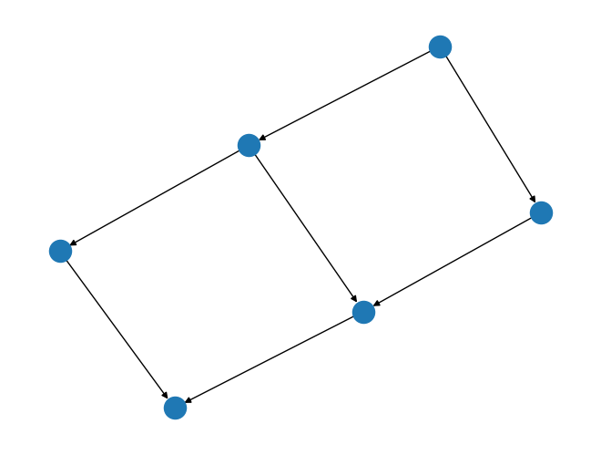

retworkx.digraph_cartesian_product¶
- digraph_cartesian_product(first, second, /)¶
Return a new PyDiGraph by forming the cartesian product from two input PyDiGraph objects
- Parameters:
- Returns:
A new PyDiGraph object that is the cartesian product of
firstandsecond. It’s worth noting the weight/data payload objects are passed by reference fromfirstandsecondto this new object. A read-only dictionary of the product of nodes is also returned. The keys are a tuple where the first element is a node of the first graph and the second element is a node of the second graph, and the values are the map of those elements to node indices in the product graph. For example:{ (0, 0): 0, (0, 1): 1, }
- Return type:
Tuple[
PyDiGraph,ProductNodeMap]
import retworkx.generators from retworkx.visualization import mpl_draw graph_1 = retworkx.generators.directed_path_graph(2) graph_2 = retworkx.generators.directed_path_graph(3) graph_product, _ = retworkx.digraph_cartesian_product(graph_1, graph_2) mpl_draw(graph_product)
